Herbario Universidad de Antioquia HUA
Inicio
HUA
Charlas en el Herbario «Matas y algo más…»
Ordenar por
Por defecto
Título
Fecha - Más antiguo
Fecha - Más reciente
Autor/a
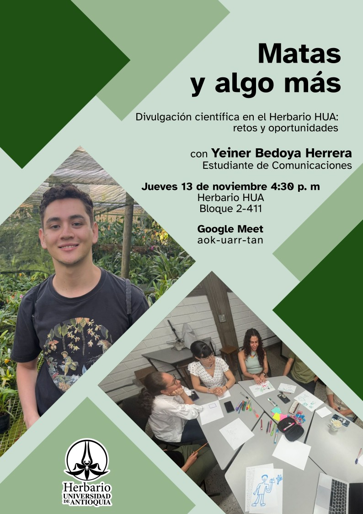
Divulgación científica en el Herbario HUA: retos y oportunidades
Yeiner Bedoya Herrera
2025-11-13
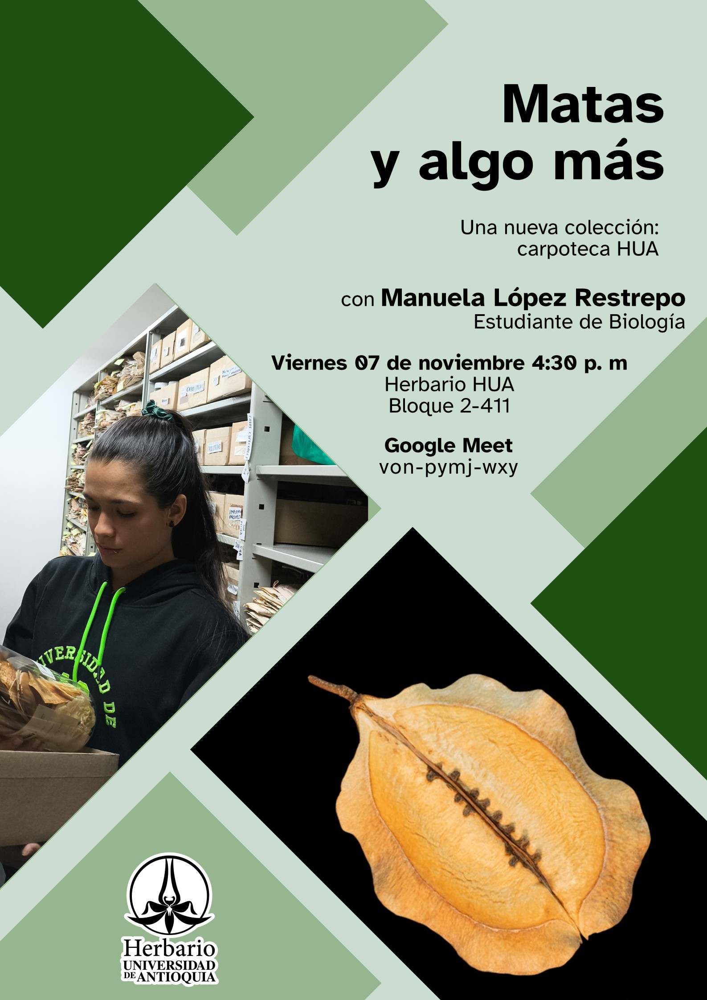
Una nueva colección: carpoteca HUA
Manuela López Restrepo
2025-11-07
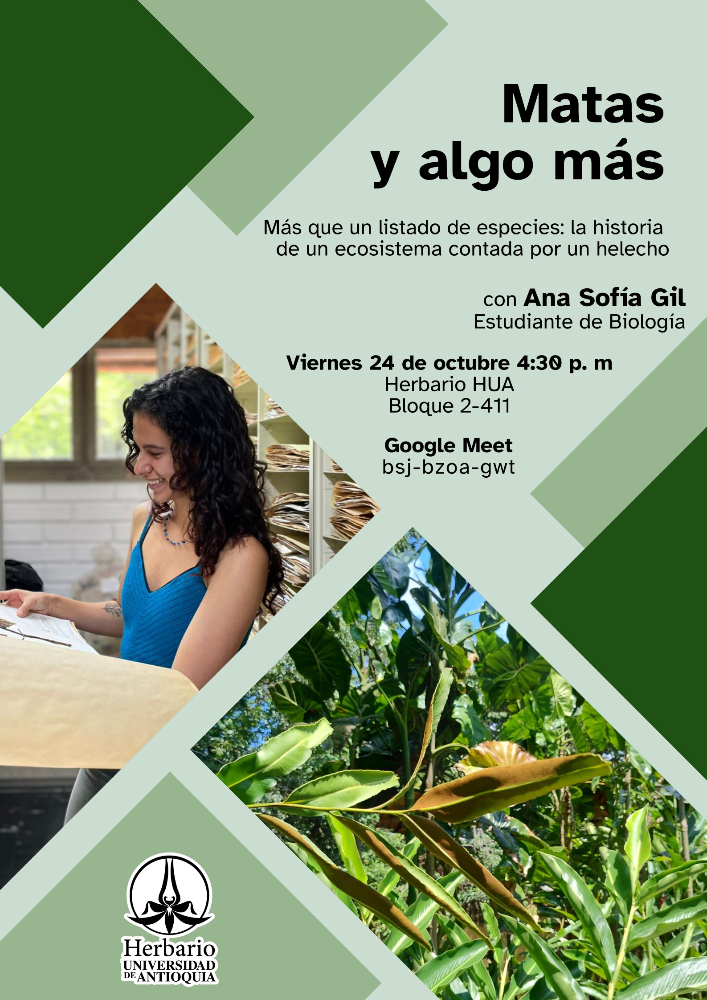
Más que un listado de especies: la historia de un ecosistema contada por un helecho
Ana Sofía Gil Rámirez
2025-10-24
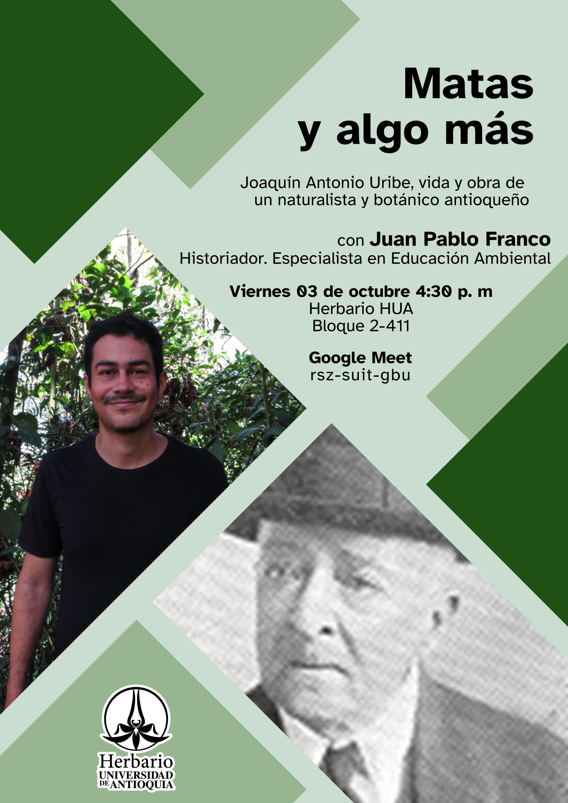
Joaquín Antonio Uribe, vida y obra de un naturalista y botánico antioqueño
Juan Pablo Franco Herrera
2025-10-03
Visibilizando el Arboretum y Palmetum León Morales Soto de la UNAL Medellín
Camilo Restrepo Caro
2025-09-12
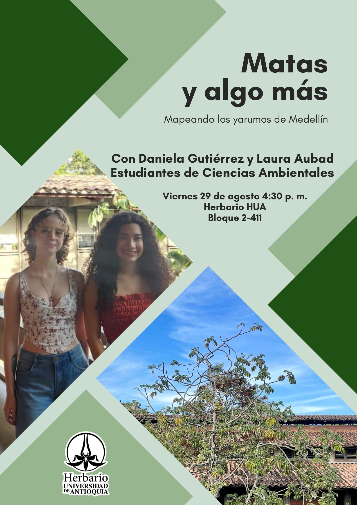
Mapeando los yarumos de Medellín
Laura Maria Aubad Lopera, Daniela Gutierrez Medina
2025-08-29
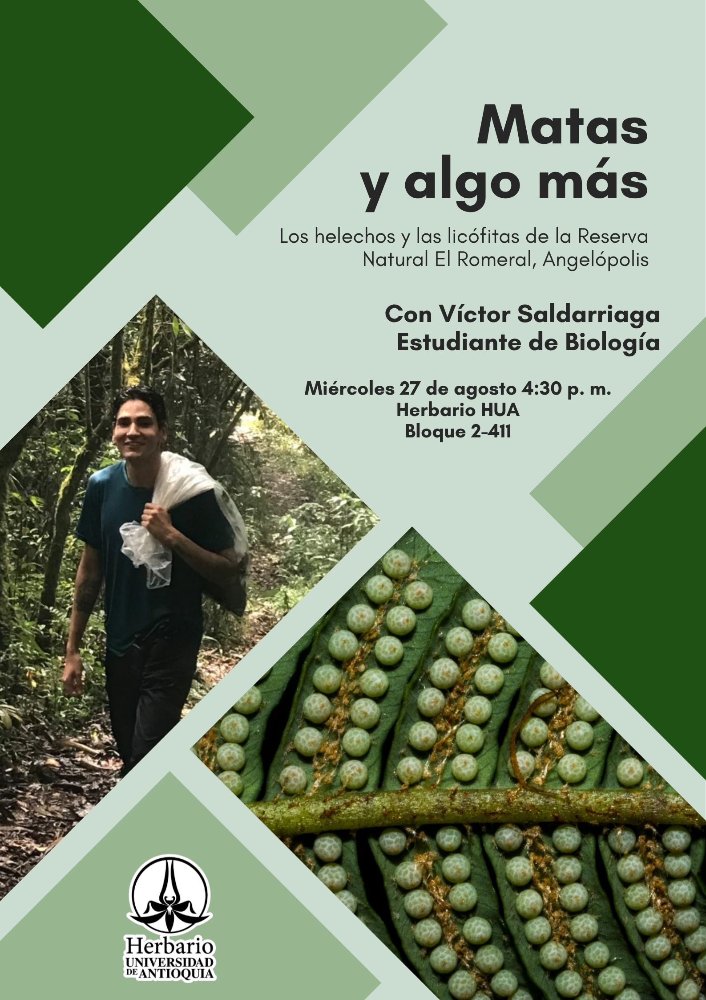
Los helechos y las licófitas de la Reserva Natural El Romeral, Angelópolis
Victor Saldarriaga Buitrago
2025-08-27
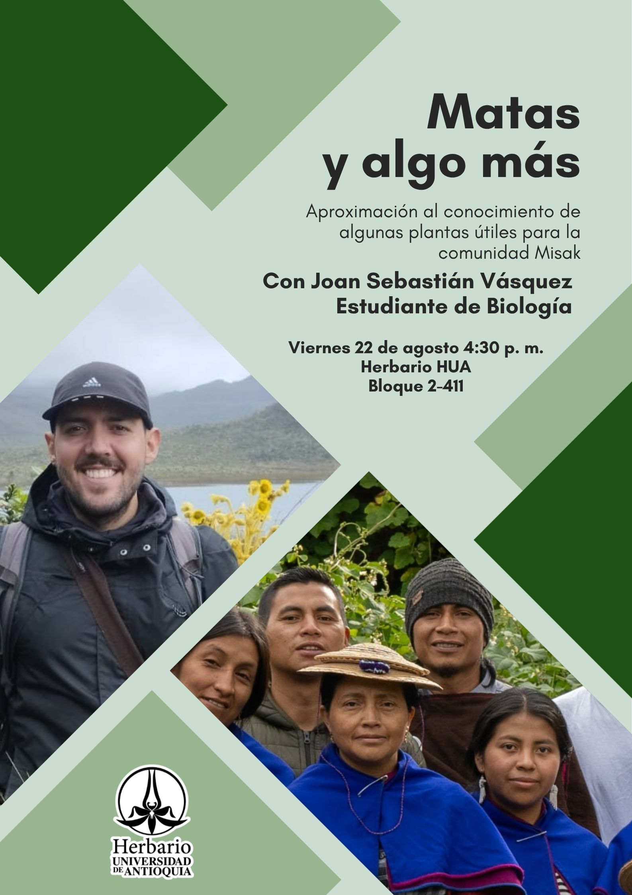
Aproximación al conocimiento de algunas plantas útiles para la comunidad Misak
Joan Sebastián Vásquez Peña
2025-08-22
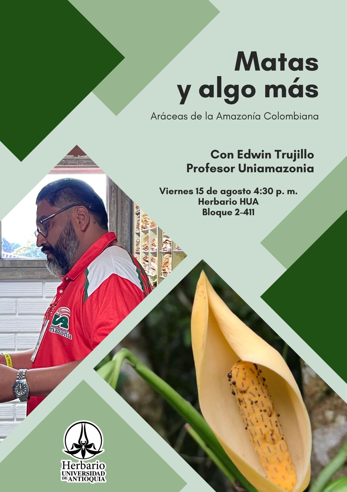
Aráceas de la Amazonía colombiana
Edwin Trujillo Trujillo
2025-08-15
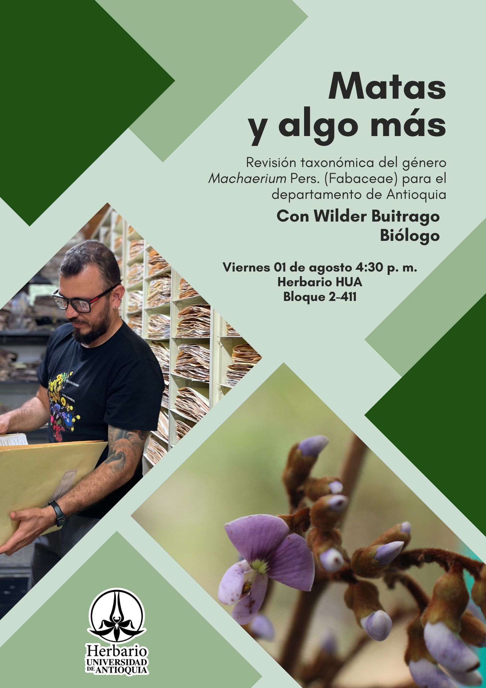
Revisión taxonómica del género
Machaerium
Pers. (Fabaceae) para el departamento de Antioquia
Wilder Buitrago Arbeláez
2025-08-01
Indumento… ¿en Clusiaceae?: un relato sobre cómo un carácter puede cambiar todo lo que crees saber de una familia
Angy Vanesa Caro Sánchez
2025-07-25
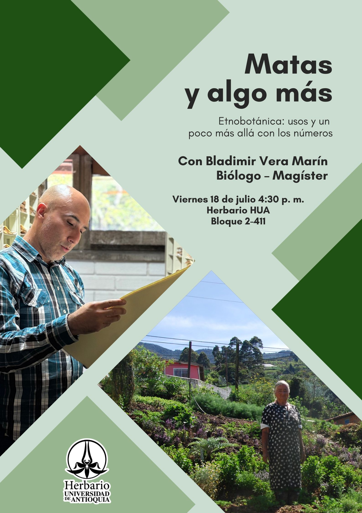
Etnobotánica: usos y un poco más allá con los números
Bladimir Vera Marín
2025-07-18
Líquenes: formas, funciones y fascinaciones
Paola Sorcia
2025-06-26
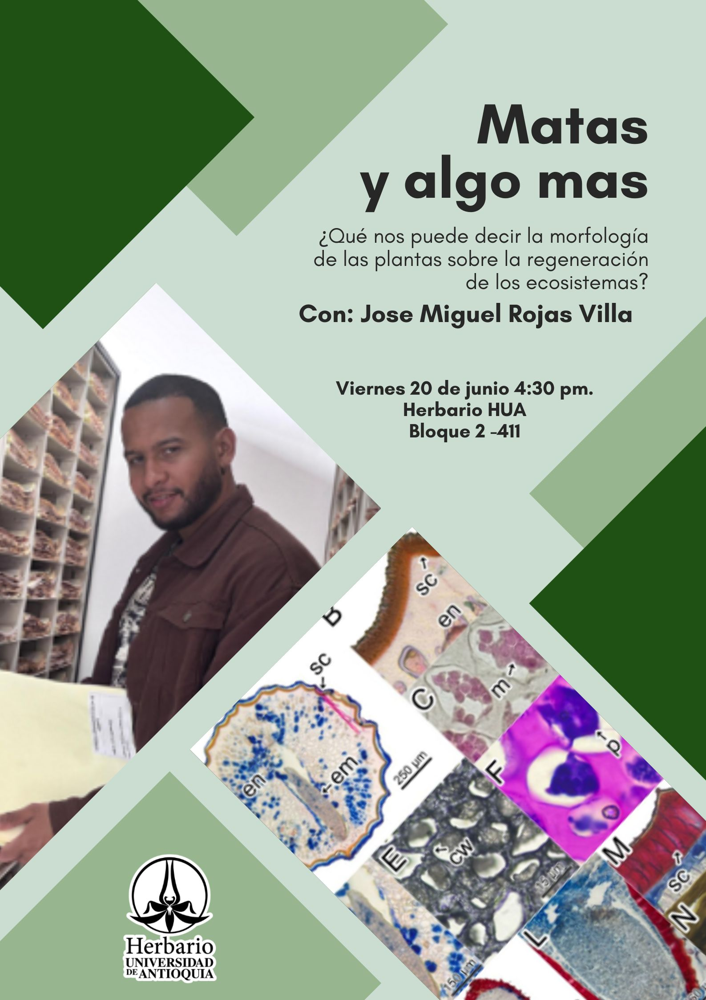
¡Qué nos puede decir la morfología de las plantas sobre la regeneración de los ecosistemas?
Jose Miguel Rojas Villaa
2025-06-20
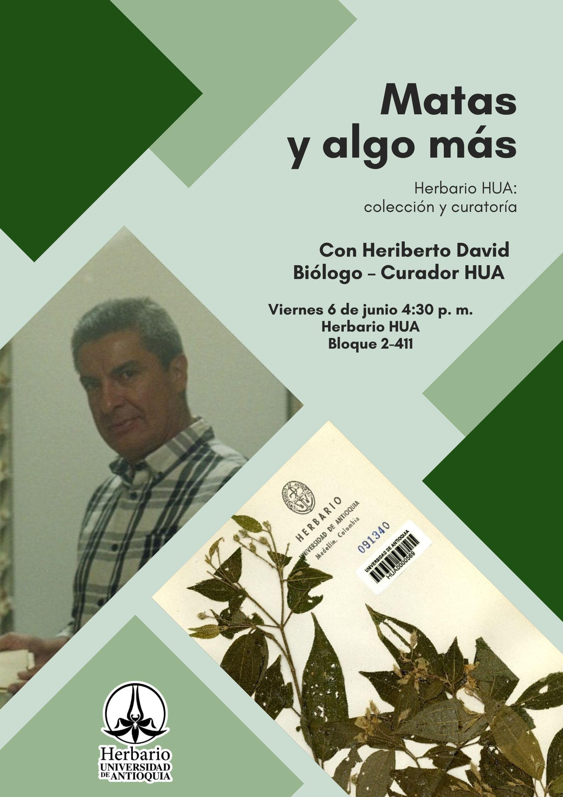
Herbario HUA: colección y curatoría
Heriberto Antonio David Higuita
2025-06-06
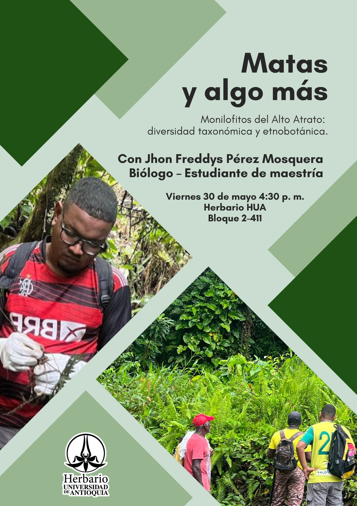
Monilofitos del Alto Atrato: diversidad taxonómica y etnobotánica
Jhon Freddys Pérez Mosquera
2025-05-30
No hay resultados